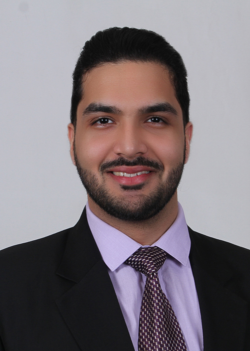

Add your photoPhysician · Researcher · Educator
Harshit Narula, MBBS
Internal Medicine Chief Resident
Sinai Hospital of Baltimore
Hematology-Oncology Fellowship Applicant
Internal Medicine Chief Resident at Sinai Hospital of Baltimore with a dedicated career focus in Hematology-Oncology, health outcomes research, and academic leadership.
As an aspiring physician-scientist, I am driven by a deep love for teaching, mentorship, and direct patient care. I am fully committed to advancing the field through research, quality improvement, and exceptional clinical service.
Research Philosophy
My clinical perspective fuels my research interests in treatment optimization and predictive oncology. By leveraging clinical data and advanced technologies — such as ctDNA and frailty scores — my goal is to maximize therapeutic efficacy, ensuring patients who will truly benefit from targeted treatments receive them, while safely sparing others from unnecessary toxicities.
245
USMLE Step 1
250
USMLE Step 2 CK
243
USMLE Step 3
Rank
273
273
AIPMT 2015
India's National Pre-Medical Test
Top 0.05% of 600,000+
India's National Pre-Medical Test
Top 0.05% of 600,000+
Career
Experience & Training
July 2026 – June 2027
Chief Resident, Internal Medicine (PGY-4)
Sinai Hospital of Baltimore
July 2025 – June 2026
Internal Medicine Resident (PGY-3) · Junior Chief Resident
Sinai Hospital of Baltimore
July 2023 – June 2026
Internal Medicine Residency
Sinai Hospital of Baltimore
2015 – 2022
MBBS — Passed with Honors
King George's Medical University (KGMU), India · Top-10 nationally ranked among 500+ medical schools
Oncology Electives
Inpatient Benign Hematology
Inpatient Solid Oncology
Solid Oncology Consult
Bladder Cancer Research Rotation
Scholarship
Research & Quality Improvement
VTE Prophylaxis Auto-Population — EMR Safety Intervention
Led institution-wide M&M Grand Rounds on a patient who developed symptomatic DVT after VTE prophylaxis was inadvertently discontinued. Conducted root cause analysis identifying copy-forwarded notes as the central failure mode. Collaborating with Hospital IT to deploy a CCL script enabling active VTE prophylaxis and anticoagulation orders to auto-populate in resident progress notes in real time.
Investigating Inconsistencies in ctDNA Molecular Surveillance
Working under the mentorship of GU oncologist Dr. Burles A. Johnson to investigate complex inconsistencies in ctDNA molecular surveillance. Study team member on an IRB-approved protocol led by Dr. Jean Hoffman-Censits.
Evaluating Chemotherapy Outcomes Based on Functional Status
Serving as first author on an early-stage, real-world data study evaluating frailty assessments and exploring chemotherapy outcomes. Operating under the direct mentorship of surgical oncologists Dr. Arun Mavanur and Dr. Joshua Wolf.
Cancer Screening QI Initiative
QI initiative to increase uptake of breast, lung, and colorectal cancer screening in an underserved patient population at the Resident-Run Community Clinic, Sinai Hospital of Baltimore, with the goal of improving rates of early cancer detection. Under mentorship of Dr. Sugumar.
Peer-Reviewed Work
Publications
Original Manuscripts
Babu AD, Narula H, et al. Comparative Insights on Inpatient Outcomes in Diastolic Heart Failure with and Without Amyloidosis: A Nationwide Propensity-Matched Analysis. Journal of Cardiovascular Development and Disease, vol. 12, no. 5, May 2025. DOI →
Narula H, et al. Anatomical Variations of Coronary Arteries in North Indian Population. IOSR Journal of Dental and Medical Sciences, Feb. 2018. DOI →
Systematic Review & Meta-Analysis
Srikanth S, Narula H, et al. Impact of D-Dimer on In-Hospital Mortality Following Aortic Dissection. Journal of the American College of Cardiology, vol. 81, no. 8, Mar. 2023. DOI →
Literature Review & Perspective
Tripathi KM, Narula H. Returning to the Hallmarks of Cancer: A Brief Review and Revision. Journal of Clinical Research and Reports, vol. 9, no. 2, Oct. 2021. DOI →
Agrawal V, Narula H, et al. Lack of Quality Clinical Data on Co-Infections Among Malaria Patients. Tropical Doctor, vol. 53, no. 1, Jan. 2023. DOI →
Published Abstracts
Narula H, et al. Obesity Paradox and Its Impact on HFpEF in Geriatric Patients. Circulation, vol. 146, Suppl. 1, Nov. 2022. DOI →
Accepted for Publication — 2026 ASCO Annual Meeting
Tewari J, …, Narula H (last author). Histology and Stage-Specific Incidence Trends in Appendiceal Adenocarcinoma in the US, 2000–2022: A SEER Analysis. Abstract 551122.
Atunde FJ, …, Narula H, et al. Durvalumab Consolidation After Definitive Chemoradiotherapy in Unresectable Stage III NSCLC. Abstract 534032.
Atunde FJ, …, Narula H, et al. Global Evolution of HER2-Targeted Clinical Trials Across Solid Tumors. Abstract 542726.
Pandey A, …, Narula H, et al. GLP-1 Medication Uptake Among US Cancer Survivors with Diabetes. Abstract 548466.
Conferences
Presentations
Upcoming — 2026
ASCO 2026
Cost-Effectiveness Analysis of First-Line Therapies for Advanced Urothelial Carcinoma from a U.S. Payer Perspective
ASCO 2026
Intracranial Outcomes with Next-Generation ALK Inhibitors vs. Crizotinib in First-Line ALK+ NSCLC: A Meta-Analysis of Phase III Randomized Trials
CHEST 2026
Predictors of Community Discharge and Clinical Outcomes After Mechanical Ventilation in Metastatic Lung Cancer: A Nationwide Inpatient Sample Study
Award-Winning Presentations
🥈 Silver Medal
Unmasking Stiff Person Syndrome: A Rare Mimic of Seizures and Neuroleptic Malignant Syndrome
🥇 Gold Medal
Resistance to Tenofovir in a Patient Treated for HBV Infection
ACP 2020
Scrub Typhus Presenting with Hemiparesis: A Rare Occurrence
Recognition
Awards & Honors
Above & Beyond Award — Block 10 (2025–2026)
Above & Beyond Award — Block 13 (2024–2025)
Silver Prize — Maryland ACP Jeopardy 2024
Gold Medal — ACP India Chapter 2018
Silver Prize — SS Khan Dissection Competition
Gold Medal — Inter-Medical College Debate 2015
Honors in 6 Subjects — MBBS Professional Exams
Excellence in Academics — High School 2015
Photos — Awards & Milestones
Add your photos — see instructions below